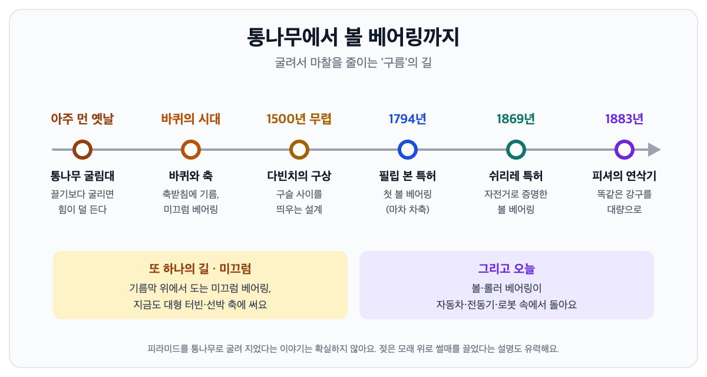

← 글 목록 · 베어링 이야기
통나무에서 볼 베어링까지 — 베어링의 역사
베어링은 어느 날 한 사람이 발명한 물건이 아니에요. 무거운 것을 굴려서 옮기던 오래된 지혜에서 시작해, 바퀴 축에 기름을 바르던 미끄럼 베어링을 거쳤어요. 그 뒤 1794년 첫 볼 베어링 특허, 1869년 자전거, 1883년 똑같은 쇠구슬의 대량생산을 지나 지금의 모습이 됐습니다.

끌기보다 굴리기 — 아주 오래된 지혜
무거운 돌을 땅에 대고 끌면 바닥과 닿은 면 전체가 움직임을 방해해요. 이 힘이 마찰이에요. 그런데 둥근 통나무 위에 올리면 닿는 곳이 계속 바뀌면서 훨씬 적은 힘으로 움직여요. 미끄러짐을 구름으로 바꾸는 것, 이것이 오늘날 볼 베어링과 롤러 베어링의 원리예요.
피라미드를 통나무로 굴려 지었다는 이야기는 유명하지만 확실하지는 않아요. 이집트의 제후티호텝 무덤 벽화에는 거대한 석상을 실은 썰매 앞에서 사람이 바닥에 물을 붓는 장면이 있어요. 2014년 네덜란드 암스테르담 대학 연구진은 모래를 알맞게 적시면 썰매를 끄는 데 드는 사람이 절반 정도로 줄어든다는 실험 결과를 냈고요. 굴리든 젖은 모래 위로 끌든 목적은 같았어요. 마찰을 줄여서 사람 힘으로는 못 옮길 것을 옮기는 것이었죠.
배를 물에 띄울 때도 두 가지 방법을 썼어요. 배 밑에 통나무를 깔아 굴리거나, 기름이나 동물성 지방을 바른 받침 위로 미끄러뜨렸어요. 굴려서 줄이는 길(구름)과 기름으로 줄이는 길(미끄럼), 베어링은 이 두 갈래로 자라게 됩니다.
바퀴가 남긴 숙제, 축
통나무를 매번 앞으로 옮겨 놓는 수고를 없앤 것이 바퀴예요. 그런데 바퀴가 돌려면 가운데에 축이 있어야 하고, 축과 바퀴 구멍은 계속 맞닿아 닳았어요. 사람들은 더 단단한 나무를 쓰고, 구멍에 청동 덧댐을 끼우고, 동물성 지방이나 식물성 기름을 발랐어요. 축을 감싸 받치는 이 부품이 가장 오래된 베어링, 미끄럼 베어링의 시작이에요.
미끄럼 베어링은 낡은 기술이 아니에요. 축이 돌면 기름이 끌려 들어가 얇은 기름막을 만들고, 축은 그 위에 떠서 돌아요. 큰 하중과 충격에 강해서 지금도 대형 선박의 추진축이나 발전소 터빈 같은 거대한 기계에 쓰여요.
쇠구슬을 기계 안으로 — 다빈치에서 필립 본까지
굴리는 원리를 기계 안에 넣으려는 생각은 르네상스 시대에 나타나요. 레오나르도 다빈치는 1500년 무렵 남긴 스케치에서 두 면 사이에 구슬을 넣고, 구슬끼리 부딪히지 않게 사이를 띄우는 장치까지 구상했어요. 오늘날 볼 베어링의 케이지(구슬 사이 간격을 잡아 주는 부품)와 닮은 생각이에요. 하지만 그때는 크기가 똑같은 쇠구슬을 만들 기술이 없었어요.
18세기에는 규모가 전혀 다른 시도도 있었어요. 러시아는 1769~1770년 표트르 대제 기념상의 받침돌로 쓸 '천둥의 바위'를 상트페테르부르크로 옮겼어요. 무게가 1,500톤이 넘는 이 바위를 청동 구슬 위에 올린 썰매에 싣고 홈 파인 길을 따라 밀었습니다.
1794년, 영국 웨일스의 철공업자 필립 본은 마차의 차축과 바퀴 허브 사이에 쇠구슬을 넣는 구조로 특허를 받았어요. 흔히 세계 최초의 볼 베어링 특허로 꼽혀요. 생각은 옳았지만 너무 일렀어요. 구슬을 손으로 만들면 크기가 제각각이라, 하중이 큰 구슬 몇 개에 몰려 금방 망가졌거든요.
자전거가 증명하고, 피셔가 완성하다
볼 베어링을 세상에 알린 것은 자전거였어요. 사람 다리 힘으로 움직이니 작은 마찰도 바로 느껴지거든요. 1869년 8월 파리의 자전거 정비공 쥘 쉬리레가 자전거용 볼 베어링 특허를 받았고, 그해 11월 파리–루앙 장거리 경주에서 우승한 제임스 무어의 자전거에도 이 베어링이 들어갔다고 알려져 있어요. 사람들은 원리는 몰라도 '더 가볍게 나가고, 페달을 멈춰도 바퀴가 오래 돈다'는 걸 몸으로 느꼈어요.
남은 숙제는 똑같은 구슬을 많이 만드는 일이었어요. 1883년 독일 슈바인푸르트의 프리드리히 피셔가 크기와 둥근 정도가 고른 강구를 기계로 갈아 대량으로 만드는 방법을 내놓았어요. 이때부터 볼 베어링은 장인의 손에 기대는 특별한 부품에서 공장에서 만들어 내는 산업 제품이 됐어요. 피셔의 회사는 오늘날 독일 베어링 회사 FAG(셰플러 그룹)의 뿌리가 됐고, 슈바인푸르트는 지금도 베어링 산업의 중심지예요.
그래서 오늘날에는
통나무에서 시작한 구름의 길은 볼 베어링과 롤러 베어링이 되어 자동차, 전동기, 로봇 속에서 돌아요. 기름을 바르던 미끄럼의 길은 기름막 위에서 도는 미끄럼 베어링이 되어 터빈과 배의 축을 받치고요. 모양과 재료는 달라졌지만 하는 일은 수천 년째 같아요. 마찰을 줄이고, 무게를 받치고, 원하는 움직임을 오래 지키는 것이에요.
현장 이야기
더 알아보기
- 베어링 번호 읽는 법 — 6205ZZ는 무슨 뜻일까
- 볼 베어링과 롤러 베어링, 무엇이 다를까 (준비 중)
- 풍력발전기의 거대한 날개를 받치는 베어링 (준비 중)
- 이 글은 준비 중인 교양책 1장의 두 꼭지를 줄인 것이에요. 책이 나오면 이곳에서 알려 드릴게요.
오래된 기계의 베어링을 찾으세요?
번호가 닳아 안 보이거나 단종된 베어링도 같은 크기의 호환품을 함께 찾아 드려요. 번호나 사진만 보내 주세요.
견적 문의는 사이트를 정식으로 열 때 함께 열어요.
견적 문의하기 (준비 중)